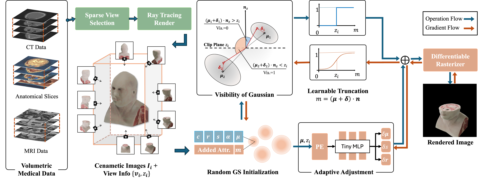

The visualization of volumetric medical data is crucial for enhancing diagnostic accuracy and improving surgical planning and education. Cinematic rendering techniques significantly enrich this process by providing high-quality visualizations that convey intricate anatomical details, thereby facilitating better understanding and decision-making in medical contexts. However, the high computing cost and low rendering speed limit the requirement of interactive visualization in practical applications. In this paper, we introduce ClipGS, an innovative Gaussian splatting framework with the clipping plane supported, for interactive cinematic visualization of volumetric medical data. To address the challenges posed by dynamic interactions, we propose a learnable truncation scheme that automatically adjusts the visibility of Gaussian primitives in response to the clipping plane. Besides, we also design an adaptive adjustment model to dynamically adjust the deformation of Gaussians and refine the rendering performance. We validate our method on five volumetric medical data (including CT and anatomical slice data), and reach an average 36.635 PSNR rendering quality with 156 FPS and 16.1 MB model size, outperforming state-of-the-art methods in rendering quality and efficiency.

For a given volumetric medical data, our method implements a real-time cinematic rendering for a given query view and clipping plane. Firstly, we use a ray-tracing renderer to generate a sparse cinematic image sequence under random camera views and random clipping plane. Then, we optimize a random initialized 3D Gaussian point cloud from these images. For doing this, We introduce a learnable attribute to the Gaussian primitive to automatically control the visibility with the query clipping plane. To refine the rendering quality, we design an adaptive adjustment model to dynamically adjust the position and shape of visible Gaussian under the specific clipping plane. During Trainning, we employ a two-step optimization strategy in our method. Firstly, we train the GS with our learnable truncation scheme to obtain a coarse initialization. Then, we start the adaptive adjustment to refine the rendering performance and keep the consistency in the clipping plane dimension
@article{li2025clipgs,
title={ClipGS: Clippable Gaussian Splatting for Interactive Cinematic Visualization of Volumetric Medical Data},
author={Li, Chengkun and Tong, Yuqi and Chen, Kai and Yang, Zhenya and Li, Ruiyang and Qiu, Shi and Chan, Jason Ying-Kuen and Heng, Pheng-Ann and Dou, Qi},
journal={arXiv preprint arXiv:2507.06647},
year={2025}
}